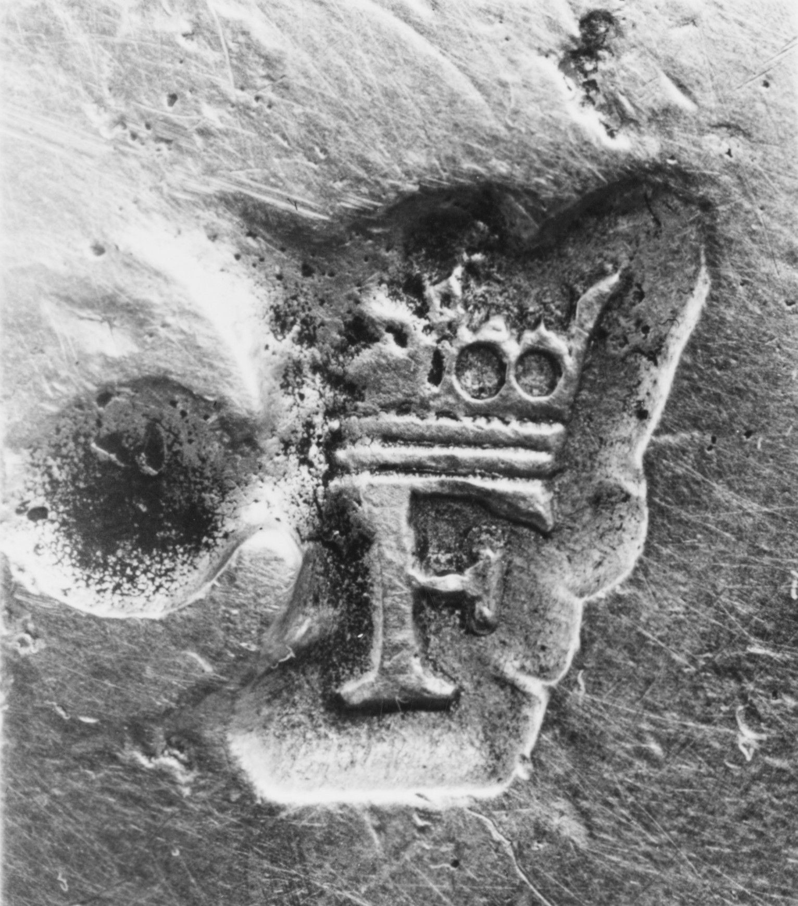
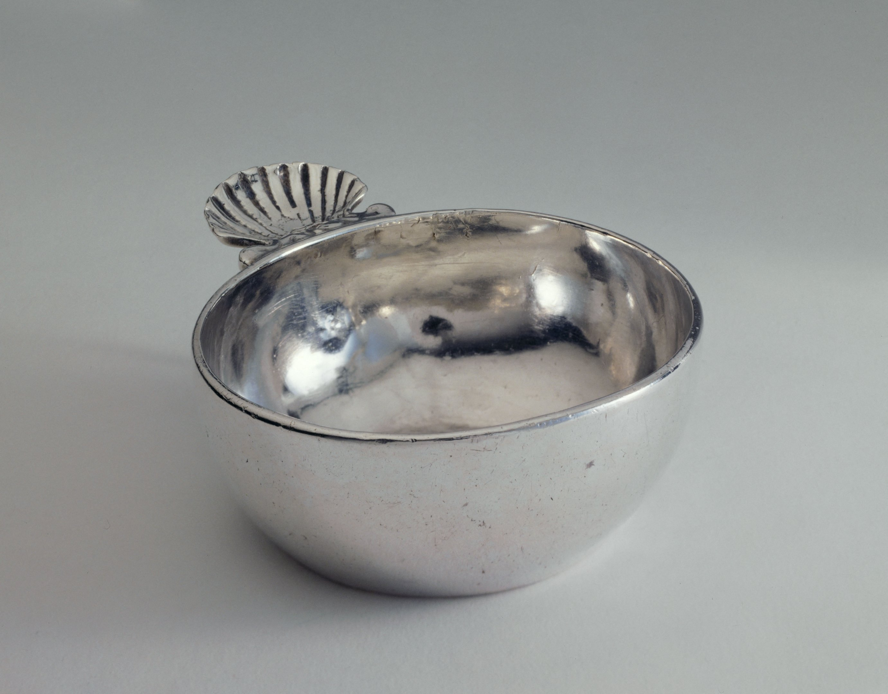

Dated, not identified
A Paris discharge mark can fix a period. These two circles still do not tell me what they are.
The three photographs have different magnifications and functions. The Petit Palais photograph shows the vessel; its record, rather than this image, describes the rim mark.



The circle on .173 contains a head; the teapot has a dark circle beside its crowned stamp. Beside a dated Paris example, the date ranges overlap, but the photographs do not make the circles more alike. The Paris Musées record identifies the tastevin's discharge as a ducal crown with a lizard passing through. A Louvre spice box from 1702–03 records the same 1697–1704 discharge, separately from its charge and maker's mark. Those catalog descriptions supply a period reference, not a visual match to either circle.
The Met dates .173 to 1697–1704 and .78 to 1699–1700; it names no maker for .173. A discharge is a tax mark applied to finished work after duty, according to the Getty guide. The head on the dish remains unclassified, and the teapot circle remains too worn to compare. Neither becomes a maker's signature here.